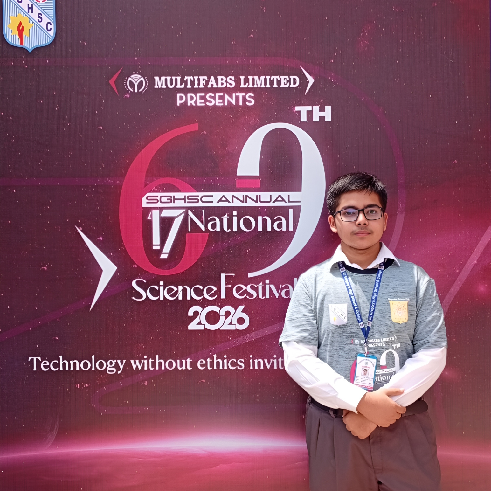
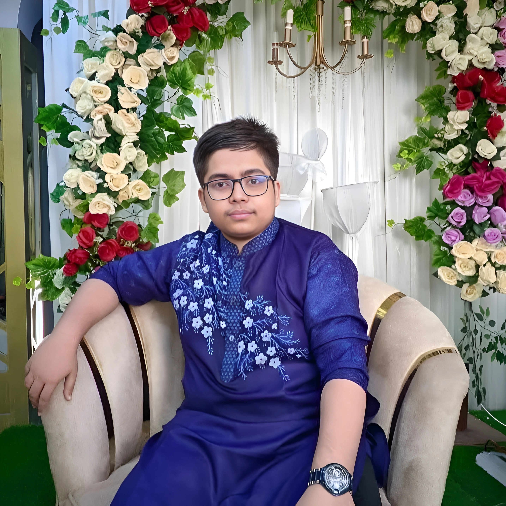

Biography
I am Arpon Barman Ram. I am studying in the science stream. Alongside my academic studies, exploring new technologies and building websites are my passions.
Date of Birth: November 13, 2008
My journey, education, interests, and the things I enjoy learning.


I am Arpon Barman Ram. I am studying in the science stream. Alongside my academic studies, exploring new technologies and building websites are my passions.
Date of Birth: November 13, 2008
Group: Science
Favorite subjects: Mathematics, Physics, and Computer Science.
Attended Green Haven Kindergarten from Playgroup to Class 2, then Zinzira Pir Mohammad High School and College for Classes 3–10. Currently pursuing higher secondary education at St. Gregory's High School and College.
Things I enjoy and keep developing:
I also enjoy gardening and caring for plants, drawing, playing games, and learning practical things.
Certificates will be added here when available.